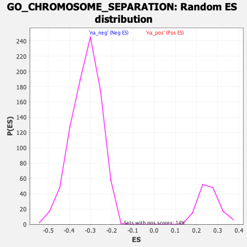

| | | Dataset | DE_genes2 |
| Phenotype | NoPhenotypeAvailable |
| Upregulated in class | na_neg |
| GeneSet | GO_CHROMOSOME_SEPARATION |
| Enrichment Score (ES) | -0.6899635 |
| Normalized Enrichment Score (NES) | -2.1415837 |
| Nominal p-value | 0.0 |
| FDR q-value | 0.0 |
| FWER p-Value | 0.0 |
Table: GSEA Results Summary
 Fig 1: Enrichment plot: GO_CHROMOSOME_SEPARATION
Fig 1: Enrichment plot: GO_CHROMOSOME_SEPARATION
Profile of the Running ES Score & Positions of GeneSet Members on the Rank Ordered List
| PROBE | GENE SYMBOL | GENE_TITLE | RANK IN GENE LIST | RANK METRIC SCORE | RUNNING ES | CORE ENRICHMENT | | 1 | LCMT1 | | | 10 | 11.072 | 0.0370 | No |
| 2 | MAD1L1 | | | 922 | 2.842 | -0.0087 | No |
| 3 | KLHL22 | | | 1357 | 2.307 | -0.0272 | No |
| 4 | DIS3L2 | | | 1472 | 2.205 | -0.0266 | No |
| 5 | PPP2R1A | | | 1600 | 2.090 | -0.0272 | No |
| 6 | RECQL5 | | | 1740 | 1.959 | -0.0290 | No |
| 7 | NUMA1 | | | 2493 | 1.446 | -0.0698 | No |
| 8 | M1AP | | | 3343 | 1.061 | -0.1178 | No |
| 9 | EME2 | | | 5252 | 0.504 | -0.2321 | No |
| 10 | MAPK15 | | | 6185 | 0.308 | -0.2876 | No |
| 11 | ANAPC15 | | | 6393 | 0.265 | -0.2993 | No |
| 12 | SLX4 | | | 7210 | 0.114 | -0.3485 | No |
| 13 | NCAPH2 | | | 7491 | 0.067 | -0.3653 | No |
| 14 | MAD2L2 | | | 7828 | 0.012 | -0.3857 | No |
| 15 | MUS81 | | | 7965 | -0.006 | -0.3940 | No |
| 16 | ANAPC5 | | | 8465 | -0.087 | -0.4240 | No |
| 17 | PSMG2 | | | 8766 | -0.147 | -0.4417 | No |
| 18 | ZNF207 | | | 8957 | -0.183 | -0.4526 | No |
| 19 | TOP3A | | | 9720 | -0.375 | -0.4977 | No |
| 20 | HECW2 | | | 9745 | -0.384 | -0.4978 | No |
| 21 | NSMCE2 | | | 10641 | -0.675 | -0.5499 | No |
| 22 | NEK6 | | | 10708 | -0.693 | -0.5516 | No |
| 23 | CSNK2A2 | | | 11120 | -0.849 | -0.5737 | No |
| 24 | CDC23 | | | 11236 | -0.896 | -0.5776 | No |
| 25 | CSNK2A1 | | | 11539 | -1.024 | -0.5925 | No |
| 26 | PTTG3P | | | 11552 | -1.029 | -0.5897 | No |
| 27 | ANAPC11 | | | 11722 | -1.095 | -0.5963 | No |
| 28 | DYNC1LI1 | | | 11956 | -1.198 | -0.6064 | No |
| 29 | XRCC3 | | | 12710 | -1.592 | -0.6467 | No |
| 30 | DUSP1 | | | 12720 | -1.599 | -0.6418 | No |
| 31 | CDC26 | | | 12894 | -1.710 | -0.6465 | No |
| 32 | CDT1 | | | 13400 | -2.026 | -0.6703 | No |
| 33 | IK | | | 13724 | -2.259 | -0.6823 | Yes |
| 34 | MLH1 | | | 13750 | -2.282 | -0.6760 | Yes |
| 35 | NCAPD2 | | | 13788 | -2.321 | -0.6704 | Yes |
| 36 | CDK5RAP2 | | | 14033 | -2.527 | -0.6766 | Yes |
| 37 | MEIOB | | | 14036 | -2.533 | -0.6681 | Yes |
| 38 | NCAPD3 | | | 14122 | -2.615 | -0.6644 | Yes |
| 39 | ESPL1 | | | 14262 | -2.749 | -0.6635 | Yes |
| 40 | PCID2 | | | 14369 | -2.855 | -0.6602 | Yes |
| 41 | PTTG1 | | | 14464 | -2.952 | -0.6559 | Yes |
| 42 | BUB3 | | | 14549 | -3.043 | -0.6507 | Yes |
| 43 | CDC27 | | | 14637 | -3.170 | -0.6452 | Yes |
| 44 | ZW10 | | | 14679 | -3.216 | -0.6367 | Yes |
| 45 | TACC3 | | | 15038 | -3.698 | -0.6459 | Yes |
| 46 | ERCC4 | | | 15195 | -3.914 | -0.6421 | Yes |
| 47 | ANAPC1 | | | 15217 | -3.941 | -0.6300 | Yes |
| 48 | ATM | | | 15219 | -3.945 | -0.6166 | Yes |
| 49 | CDC20 | | | 15404 | -4.309 | -0.6131 | Yes |
| 50 | CUL3 | | | 15431 | -4.357 | -0.5999 | Yes |
| 51 | RIOK2 | | | 15454 | -4.393 | -0.5863 | Yes |
| 52 | GEN1 | | | 15480 | -4.447 | -0.5727 | Yes |
| 53 | TRIP13 | | | 15527 | -4.544 | -0.5600 | Yes |
| 54 | PLK1 | | | 15623 | -4.763 | -0.5496 | Yes |
| 55 | CCNB1 | | | 15643 | -4.796 | -0.5345 | Yes |
| 56 | EME1 | | | 15663 | -4.840 | -0.5191 | Yes |
| 57 | RB1 | | | 15805 | -5.145 | -0.5102 | Yes |
| 58 | NCAPH | | | 15843 | -5.247 | -0.4946 | Yes |
| 59 | APC | | | 15912 | -5.426 | -0.4803 | Yes |
| 60 | RAD21 | | | 15930 | -5.459 | -0.4628 | Yes |
| 61 | FANCM | | | 15986 | -5.624 | -0.4470 | Yes |
| 62 | TPR | | | 16001 | -5.664 | -0.4286 | Yes |
| 63 | MAD2L1 | | | 16043 | -5.805 | -0.4113 | Yes |
| 64 | AURKB | | | 16120 | -6.007 | -0.3955 | Yes |
| 65 | BUB1 | | | 16142 | -6.084 | -0.3761 | Yes |
| 66 | FBXO5 | | | 16169 | -6.210 | -0.3566 | Yes |
| 67 | SPDL1 | | | 16232 | -6.486 | -0.3383 | Yes |
| 68 | ANAPC4 | | | 16245 | -6.526 | -0.3168 | Yes |
| 69 | SMARCAD1 | | | 16278 | -6.759 | -0.2958 | Yes |
| 70 | BUB1B | | | 16335 | -7.102 | -0.2750 | Yes |
| 71 | CDC6 | | | 16375 | -7.439 | -0.2521 | Yes |
| 72 | RMI1 | | | 16408 | -7.835 | -0.2274 | Yes |
| 73 | TTK | | | 16444 | -8.189 | -0.2017 | Yes |
| 74 | TOP2B | | | 16475 | -8.798 | -0.1736 | Yes |
| 75 | DLGAP5 | | | 16482 | -9.145 | -0.1428 | Yes |
| 76 | TOP2A | | | 16497 | -9.873 | -0.1101 | Yes |
| 77 | CENPE | | | 16501 | -10.010 | -0.0763 | Yes |
| 78 | CENPF | | | 16507 | -10.688 | -0.0402 | Yes |
| 79 | NDC80 | | | 16527 | -12.233 | 0.0002 | Yes |
Table: GSEA details [plain text format]

Fig 2: GO_CHROMOSOME_SEPARATION: Random ES distribution
Gene set null distribution of ES for GO_CHROMOSOME_SEPARATION